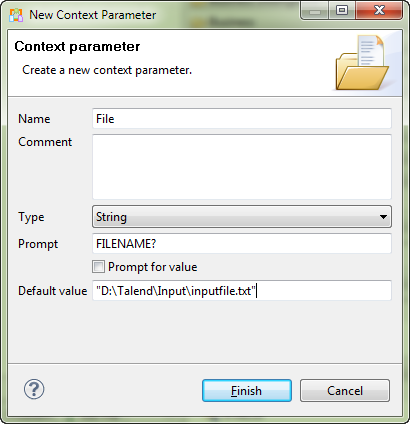
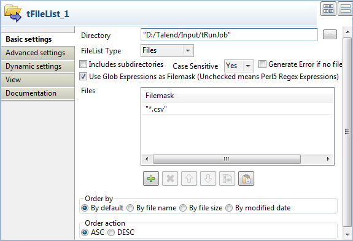
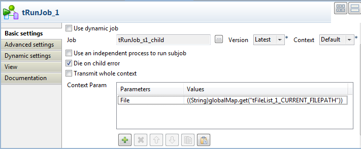
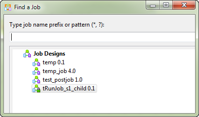

|
Famille de composant |
System | |
|
Fonction |
Le composant tRunJob exécute le Job spécifié dans ses propriétés dans un contexte défini. | |
|
Objectif |
Le tRunJob permet de maîtriser des systèmes de Job complexes devant être exécuter l’un après l’autre. | |
|
Basic settings |
Schema et Edit Schema |
Un schéma est une description de lignes, il définit le nombre de champs qui sont traités et passés au composant suivant. Le schéma est soit local (Built-in), soit distant dans le Repository. Cliquez sur Edit Schema pour modifier le schéma. Si vous effectuez des modifications, le schéma devient automatiquement built-in. Si vous utilisez Talend Open Studio for Big Data, seul le mode Built-in est disponible. |
|
|
|
Built-in : Le schéma sera créé et conservé pour ce composant seulement. Voir également le Guide utilisateur deTalend Open Studio. |
|
|
|
Repository : Le schéma existe déjà et est stocké dans le Repository. Ainsi, il peut être réutilisé dans divers projets et Job designs. Voir également le Guide utilisateur deTalend Open Studio. |
|
|
Use dynamic job |
Cochez cette case afin de pouvoir appeler et traiter de nombreux Jobs. Lorsque cette case est cochée, seule la dernière version des Jobs peut être appelée et traitée. Un processus indépendant sera utilisé pour exécuter le sous-job. Les options Context et Use an independent process to run subjob disparaissent. AvertissementL'option Use dynamic job n'est pas compatible avec le cache du JobServer. Dès lors, l'exécution peut échouer si vous exécutez dans un Job contenant un composant tRunJob avec cette option activée. AvertissementCette option est incompatible avec l'option Use or register a shared DB Connection des composants de base de données. Quand le tRunJob fonctionne de paire avec un composant de connexion à une base de données, activer les deux options fera échouer l'exécution du Job. |
|
|
Context job |
Ce champ est visible uniquement lorsque l’option Use dynamic job est cochée. Saisissez le nom du Job que vous souhaitez appeler dans la liste des Jobs sélectionnés. |
|
|
CopyChild Job Schema |
Cliquez sur ce bouton pour récupérer le schéma du Job fils. |
|
|
Job |
Sélectionnez le Job à appeler et à traiter. Assurez-vous que le Job appelé ait été exécuté au moins une fois auparavant pour que son exécution via le tRunJob se déroule le mieux possible. |
|
|
Version |
Sélectionnez la version du Job fils que vous souhaitez utiliser. |
|
|
Context |
Si vous avez paramétré des contextes et des variables pour les Jobs à exécuter via le tRunJob, sélectionnez dans la liste le contexte à appliquer. |
|
|
Use an independent process to run subjob |
Cochez cette case afin d’utiliser un processus indépendant pour exécuter le sous-job. Cela vous permettra de résoudre des problèmes liés à la taille limite de la mémoire. AvertissementL'option Use dynamic job n'est pas compatible avec le cache du JobServer. Dès lors, l'exécution peut échouer si vous exécutez dans un Job contenant un composant tRunJob avec cette option activée. |
|
|
Die on child error |
Décochez cette case pour exécuter le Job parent même s’il y a une erreur lors de l’exécution du Job fils. |
|
|
Transmit whole context |
Cochez cette case pour obtenir les contextes du Job parent. Décochez-la pour obtenir les contextes du Job fils. |
|
|
Context Param |
Vous pouvez modifier les paramètres de contexte sélectionnés. Cliquez sur le bouton [+] pour ajouter les paramètres tels qu’ils ont été définis dans le contexte du Job fils. Pour plus d’informations sur les paramètres de contexte, consultez le Guide utilisateur deTalend Open Studio. |
|
Advanced settings |
Print Parameters |
Cochez cette case pour afficher les paramètres internes et externes dans la Console. |
|
|
tStatCatcher Statistics |
Cochez cette case pour collecter les données de log au niveau du composant. |
|
Utilisation |
Ce composant peut être utilisé en Job standalone ou peut aider à clarifier certains Jobs complexes en évitant d’avoir un nombre important de sous-jobs dans le même Job. | |
|
Global Variables |
|
Child return code : indique le code de retour Java du Job fils. Disponible comme variable After. Retourne un entier : sans erreur > la valeur du code est 0. avec erreur(s) > le message d’une exception apparaît. Child exception stack trace : retourne la trace de la pile Java d’un Job fils. Disponible comme variable After. Retourne une chaîne de caractères. Pour plus d’informations concernant les variables, consultez le Guide utilisateur deTalend Open Studio. |
|
Connections |
|
Liens de sortie (d’un composant à un autre) : Row : Main. Trigger : OnSubjobOk, OnSubjobError, Run if, OnComponentOk, OnComponentError.
Liens d’entrée (d’un composant à un autre) : Row : Main, Reject, Iterate. Trigger : OnSubjobOk, OnSubjobError, Run if, OnComponentOk, OnComponentError, Synchronize, Parallelize.
Pour plus d’informations concernant les liens, consultez le Guide utilisateurTalend Open Studio. |
Le scénario suivant décrit un Job à un composant appelant et exécutant un autre Job. Le Job à exécuter lit une liste de fichiers délimités simples et affiche leur contenu dans la console de la vue Run.
Procédure 19.1. Déposer et relier les composants
A partir de la Palette, cliquez et déposez les composants tFileInputDelimited et tLogRow dans l’espace de modélisation graphique.
Connectez ces deux composants à l’aide d’un lien de type Row Main.
Procédure 19.2. Configurer les composants
Double-cliquez sur le composant tFileInputDelimited pour afficher la vue Basic settings et paramétrer les propriétés du composant d’entrée.

Cliquez dans le champ File Name puis appuyez sur la touche F5 pour ouvrir la fenêtre de configuration de variable.
Dans le champ Name, saisissez un nom pour cette nouvelle variable de contexte. Nommez-la File, dans cet exemple.
Dans le champ Defaut value, saisissez le chemin d'accès au fichier d'entrée par défaut.
Cliquez sur Finish pour valider puis appuyez sur Entrée pour vous assurer que la nouvelle variable de contexte est conservée dans le champ File Name.
Note
Vous pouvez également créer ou éditer un paramètre de contexte dans l'onglet Context au bas de l'espace de modélisation graphique. Pour plus d'informations, consultez le Guide utilisateur de Talend Open Studio
Cliquez sur le bouton [...] près de Edit schema pour ouvrir la boîte de dialogue [Schema], dans laquelle vous pouvez configurer le schéma manuellement.
Dans la boîte de dialogue, cliquez sur le bouton [+] pour ajouter des colonnes et nommez-les en fonction de la structure du fichier d'entrée.
Dans cet exemple, ce composant lit les fichiers définis dans le Job parent. Ces fichiers contiennent jusqu'à cinq colonnes. Ajoutez cinq colonnes de type String et appelez-les respectivement col_1, col_2, col_3, col_4 et col_5. Cliquez ensuite sur OK pour valider la configuration du schéma et fermer la boîte de dialogue [Schema].
Double-cliquez sur le composant tLogRow pour afficher sa vue Basic settings et paramétrer ses propriétés.
Sélectionnez l'option Table pour visualiser le contenu dans des cellules de tableau.
Procédure 19.3. Déposer et relier les composants
Cliquez et déposez les composants tFileList et tRunJob dans l’espace de modélisation.
Connectez ces deux composants à l’aide d’un lien de type Iterate.
Procédure 19.4. Configurer les composants
Double-cliquez sur le composant tFileList pour afficher la vue Basic settings et paramétrer les propriétés du composant.
Dans le champ Directory, renseignez le chemin d’accès au répertoire contenant les fichiers à traiter ou cliquez sur le bouton [...] pour parcourir votre système jusqu’à ce répertoire. Dans cet exemple, il s’agit du répertoire tRunJob qui contient trois fichiers délimités.
Dans la liste déroulante FileList Type, sélectionnez l’option Files.
Cochez la case Use Glob Expressions as Filemask pour pouvoir utiliser des expressions régulières dans vos masques de fichier et cliquez sur le bouton [+] pour ajouter une ligne dans la zone Files et définir un filtre pour faire correspondre les fichiers. Dans cet exemple, saisissez
.csvpour récupérer tous les fichiers délimités.Double-cliquez sur le composant tRunJob pour afficher la vue Basic settings et paramétrer les propriétés du composant.
Cliquez sur le bouton [...] à côté du champ Job pour accéder à la boîte de dialogue [Find a Job].
Sélectionnez le Job fils à exécuter puis cliquez sur OK pour fermer la boîte de dialogue. Le nom du Job sélectionné apparaît dans le champ Job de la vue Basic settings du tRunJob.
Dans la zone Context Param, cliquez sur le bouton [+] pour ajouter un paramètre de contexte. Le seul paramètre de contexte défini dans le Job fils, File, apparaît dans la cellule Parameter.
Cliquez dans la cellule Values puis appuyez sur Ctrl+Espace pour accéder à la liste des variables de contexte et sélectionnez le contexte tFileList-1.CURRENT_FILEPATH.
La variable de contexte correspondante apparaît dans la cellule Values :
((String)globalMap.get(tFileList-1.CURRENT_FILEPATH))Note
Pour plus d'informations concernant les variables de contexte, consultez le Guide utilisateur deTalend Open Studio.
Appuyez sur les touches Ctrl+S pour sauvegarder votre Job.
Appuyez sur F6 pour exécuter votre Job.

Le Job appelé lit les données contenues dans les fichiers d’entrée comme défini dans le schéma d’entrée et le résultat de ce Job est directement affiché dans la console Run.
Voir également :
la section intitulée « Scénario 1 : Mettre des données en mémoire tampon » du composant tBufferOutput.